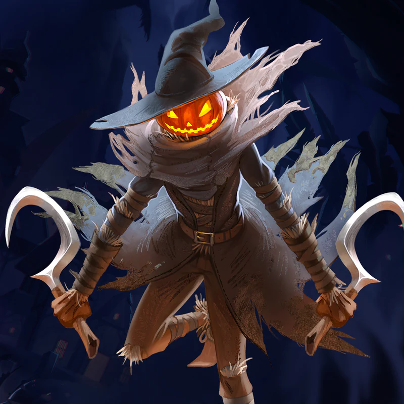
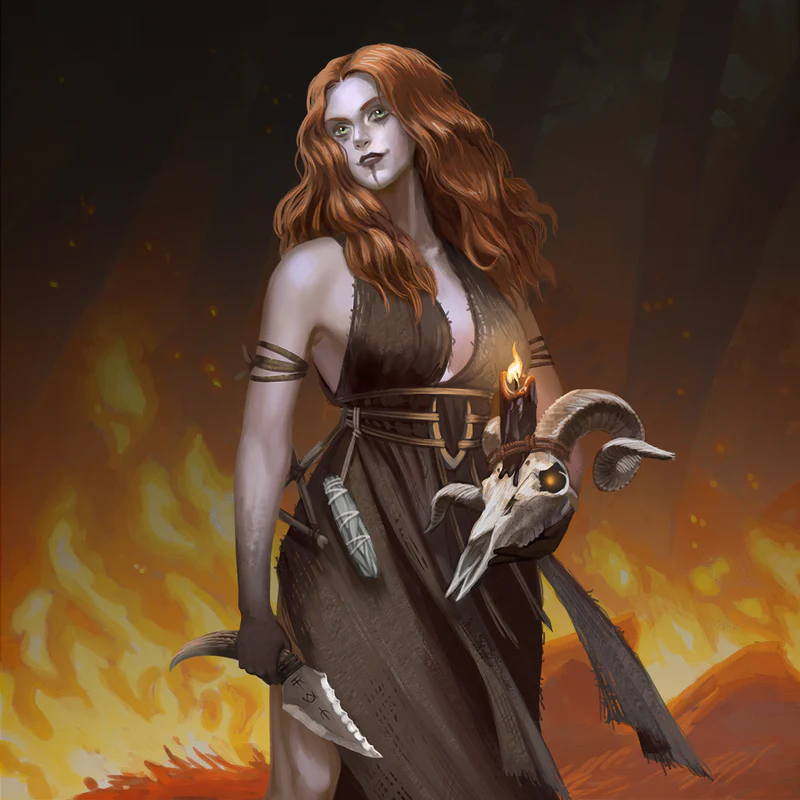
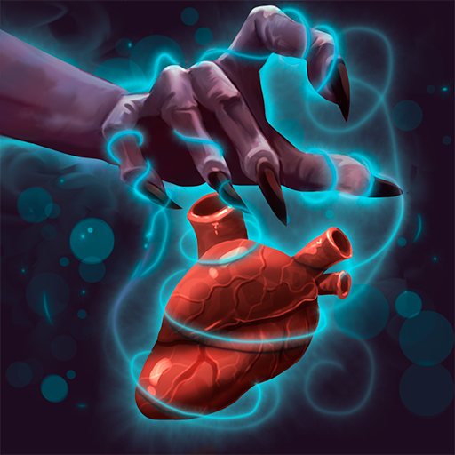

🔊
100%
Finalizar Leitura
Código do capítulo
Entrar
A LUA TORTA
CLIQUE OU ENTER PARA CONTINUAR
CLIQUE OU PRESSIONE ENTER
‹
Objetivo
Personalização
Chamado à Aventura
Antecedente Associado
›
CAPÍTULO 3
Brilho Esquecido
Escolha qual tomo deseja consultar.

I
Raças
Explorar as treze linhagens de Druskenvald

II
Subclasses
Explorar quinze caminhos de poder

III
Magias
Consultar os sortilégios de cada classe
CÓDIGO PARA A PRÓXIMA FASE
Fios do Destino
Copiar código
Voltar para a Home